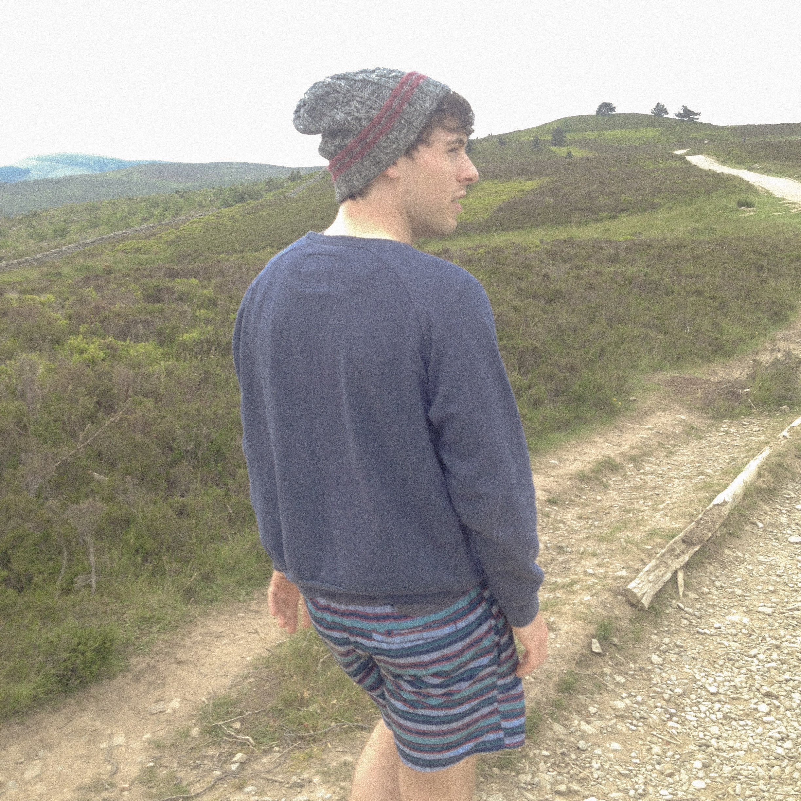

🪨
gary-martin is an artist, designer, and researcher. he is interested in systems of production and consumption, and their ecological entanglement. his social practice spans participatory art, speculative tools, and audio-visual composition.
for over a decade he has facilitated creative projects with young people across Wales, and partners like Cadw, The King's Trust, Shakespeare's Globe, and Tate.
he is a Pervasive Media Studio resident and a designer with pyka, where he develops interactive sound tools and experiences. he is also a lecturer at the University of Gloucestershire where he manages releases on Parkland Records and his teaching focuses on critical practice in relation to networked cultures and political ecology.

he / they
email me